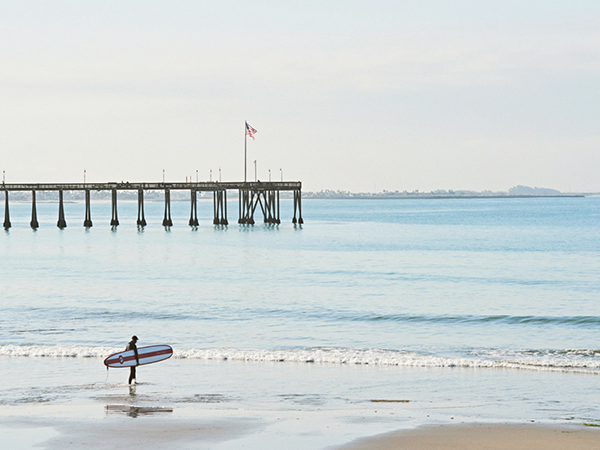
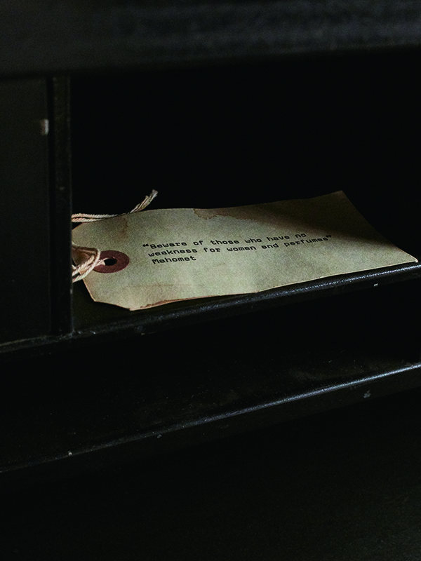
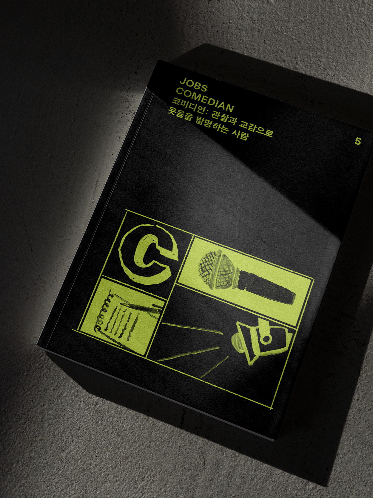

3
Shop
-

MAGAZINE B ISSUE NO.55
APPLE MUSIC
2015년 6월 시작한 애플의 음원 스트리밍 서비스 애플뮤직은 내부 에디터가 직접 큐레이팅한 플레이리스트와 음악 신의 유명 DJ를 내세운 라디오 스테이션을 통해 음악이 범람하는 디지털 시대에 양질의 음악을 접할 수 있는 플랫폼으로 기능하고 있습니다. 또한 독점 스트리밍 계약, 뮤직비디오 제작 투자 등 아티스트와의 유기적 관계를 강화하는 전략으로 상호 간 시너지를 극대화하며 음악 산업의 지평을 넓히고 있습니다.
-

MAGAZINE B ISSUE NO.38
PATAGONIA
이본 쉬나드는 1964년 암벽등반 시 암벽을 해치지 않는 금속 못(피톤)을 제작하다, 1973년 친환경 아웃도어 의류 브랜드 파타고니아를 설립하게 됩니다. 최고의 품질을 고집하면서도 친환경 소재 개발에 매진하고 매년 매출의 1%를 사회 공헌 활동에 사용하는 등 지속 가능한 사회와 환경을 만드는 데 일조하는 파타고니아는 ‘기업의 존재 이유’를 새롭게 정의하며 관련 업계는 물론
-

MAGAZINE B ISSUE NO.55
LE LABO
2006년 프랑스 출신의 두 창립자 에디 로시와 파브리스 페노가 뉴욕 놀리타에서 시작한 르 라보는 ‘실험실’이라는 단어를 그대로 따온 이름처럼 조향사의 연구실에서 일어나는 다양한 일에서 영감을 얻어 만든 컬트 향수 브랜드입니다. 원재료에 대한 존중을 기반으로 ‘상탈33’, ‘로즈 31’과 같이 독자적 매력을 지닌 향 제품을 선보이는가 하면, 매장에서 직접 향수를 블랜딩해 병입
Magazine F ISSUE NO.20
TOOLS
조리 도구는 식문화는 물론 인테리어와 디자인, 테크, 삶의 양식 전반의 변화를 담고 있는 주방의 바로미터라 할 수 있습니다.
Books
-

JOBS
JOBS - CHEF
≪잡스 - 셰프: 맛의 세계에서 매일을 보내는사람≫에서는 '맛'을 다루는 여러 직업인을 다루고 있습니다. '위대한 셰프', '셰프의 셰프'로 불리는 댄 바버, 넷플릭스 <셰프의테이블>을 통해 사 찰 음식을 전 세계에 알린 정관 스님, 서울의 파인 다이닝 씬에서 출발해 뉴욕으로 무대를 넓힌 박정현, 미식의 도시 코펜하겐에 신선한 변화를 불러온 프레데리크 빌레 브라헤, 월가의 금융인으로 커리어를 시작해 요리의 길로 방향을 바꾼
-

JOBS
JOBS - EDITOR
≪잡스 - 에디터: 좋아하는 것으로부터 좋은 것을 골라내는 사람≫에서는 다양한 이력과 산업에서 활동 중인 다섯 명의 에디터를 만났습니다.신문과 잡지 등 전통 미디어에서 일한 경험을 바탕으로 이커머스와 테크 영역으로 진출한 영국의 스타 저널리스트 ‘제러미 랭미드’, 비즈니스 뉴스 플랫폼 뉴스픽스의 최고 콘텐츠 책임자이자 경영자인 ‘사사키노리히코’, 로컬 숍 연구 잡지 <브로드컬리> 발행과 디자인을 겸하는 조퇴계-이지현, 워크룸 프레스의 편집자로 일하고
-

JOBS
JOBS - COMEDIAN
≪잡스 - 코미디언: 관찰과 교감으로 웃음을 발명하는 사람≫에서는 '이 시대 코미디언은 어떤 모습으로 활동하고 있을까?'라는 물음을 가지고, 총 여섯 명의 국내외 코미디언과 한 명의 PD와 만나봅니다. 공개 코미디, 예능, 스탠드업 코미디 등 분야를 가리지 않고 도전을 거듭하는 박나래, 공채 개그맨으로 데뷔했지만, 유튜브에서 스케치 코미디 채널을 만들어 독보적인 영역을
Thursday,
29 Sep
2022
-
B PLAYLIST

Urban Travel - Curated
by Montblanc몽블랑 팀에서 보내온 여행 테마의 'Urban Travel'
플레이리스트 -
NEWSLETTER
God gave man
olives as a gift먹거리 이상의 의미이자 문화의 근간을 이루는 식재
료 '올리브'. 올리브를 테마로 한 여행부터, 올리브 예
찬론자의 이야기까지. -
B CAST
[Chapter 83] JOBS -
NOVELIST소설<창문 넘어 도망친 100세 노인>의 저자 요나스
요나손 인터뷰 낭독 -
NEWSLETTER
Explore the
brand's route자연에서 영감을 받은 '오아시스 타워'부터 자신과 가
족의 지분을 모두 기부한 파타고니아 창립자 이본 쉬
나드의 이야기까지. -
NEWSLETTER
How to make a
better life with
clothes일곱 번째 이슈를 발간한<라이프웨어 매거진>과 이
를 기념해 한국을 방문한 기노시타 타카하로의 이야
기.30년 경력의 베테랑 편집자가 말하는 좋은 잡지
를 만드는 방법. -
B CAST
[Chapter 26] STARWARS
(part2)매거진 B 조수용 발행인과 신기주 에스콰이어 편집
장이 이야기하는 스타워즈의 상품성과 디즈니 인수
이후의 미래